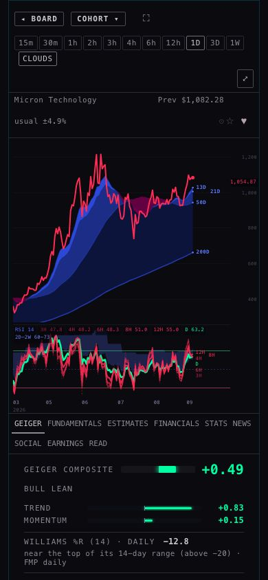
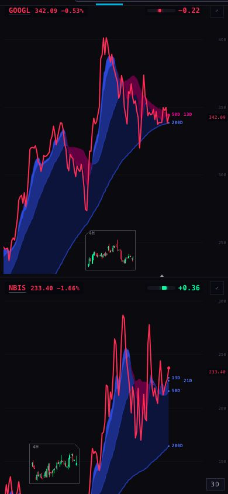

SCINTILLA · L2 CHART-SPEED · MON 28 SEP 2026 · STATION BRANCH station/chart-speed-20260928 (on live 64124b6) · HUB BRANCH candidate/chart-speed-20260928 · NOT DEPLOYED (the coordinator deploys)
Why the chart took nine seconds, and what changed
The main reason: every time anything asks the chart server for a Geiger reading, the server stops answering everything else for 2–5 seconds. Opening a company asked it for a Geiger reading at the same moment it asked for the clouds and the six RSI lines, so those waited. That was most of the nine seconds.
What changed, on the Station (the chart in the Hub's company view is the Station's chart): the chart now asks for its own Geiger chip only after its price, clouds, RSI fan and lens have arrived, and the Station wall asks for its Geigers only after its prices and clouds. The RSI fan also stopped asking twice for daily bars it already had. Nothing the chart shows changed; only the order of the requests did.
Result, median of three runs each, measured against today's live Station (64124b6):
RSI fan (the nine-second part), Hub MU: warm opens 5.2 s → 1.8 s (board row) and 11.9 s → 2.5 s (first second after load); cold opens 5.9 s → 4.0 s and 6.1 s → 5.1 s.
Clouds, Hub MU, cold: 5.6 s → 3.9 s and 5.7 s → 3.2 s. Warm: under 0.2 s before and after (they come from the browser's memory).
Price line: warm 0.1–0.2 s before and after — inside your 1–2 s. Cold it is 0.2–4.3 s in both versions and swings run to run; the slow ones were the Hub's own requests (its GEIGER tab reading, its every-2-seconds quotes for all 486 names) landing on the price request. See §3.
Station TARGETS (8 charts): cold price 2.6 s → 2.2 s, clouds 2.9 s → 2.3 s, lens 2.9 s → 2.2 s; warm lens 1.6 s → 0.8 s.
The cost: the Geiger chip comes later — on the Hub's chart 2.8 s → 7.2 s cold (warm 3.1 s → 4.3 s), on the Station wall 2.7 s → 4.8 s cold. The Hub's own Geiger tile beside the chart is not delayed.
The real cure is on the server (another lane owns it): make the Geiger answer a quick lookup instead of a stop-everything job. Then nothing has to wait for anything, and the chip comes back early too. §7.
1 · The main reason, in plain words
The chart server answers one kind of request in a way that blocks all the others: a Geiger request. I proved it directly, not from the browser: a tiny request that normally takes 0.11 s took 2.1 s, and up to 5.0 s, when sent while a Geiger request was being answered. A price request went from 0.2 s to 2.4 s the same way. The Geiger request itself takes 2.2–5.1 s.
When you opened MU, three Geiger requests went out within the first second: the Hub's board, the Hub's GEIGER tab, and the chart's own chip. The chart asked for its clouds and its 13 RSI-fan pieces at that same moment, so they all sat and waited, then arrived together when the Geiger answer came back: clouds 6.3 s, fan 9.2 s in the first measurement this morning.
Everything else on the list was smaller or not a cause at all (§6): the ownership check costs ~0.1 s, the Hub's burst of database reads goes to a different server, and the browser itself is never busy for long.
2 · What I changed (the Station chart and the Station wall; nothing on the Hub itself)
These numbers were measured on the Station as it was this morning (bca97fa); §3–5 repeat the whole comparison on today's live Station (64124b6), which I rebased onto. Each change was made alone and measured before the next one (the numbers are in the commits and in §3–5). Price first, then clouds, then the rest — as you asked. Nothing about what the chart shows changed: the same bars, the same clouds, the same six RSI lines, the same Geiger reading with the same checks. Only the order of the requests changed, and two duplicate requests were dropped.
#
Change
Why
Measured effect (at the time)
1
The chart's own Geiger chip waits until its price, clouds, RSI fan and lens reads are done — at most 4 s after the price is on screen.
That Geiger read was going out at the same moment as the cloud and fan reads and froze them.
Hub MU, two before/after pairs: fan 6.2–7.1 s → 0.5–2.9 s; clouds 0.2–3.8 s → 0.07–2.6 s. Geiger chip 0–1.6 s later.
2
The fan's daily line reuses the clouds' daily bars instead of asking for them twice more.
Both draw from the same completed daily closes; the clouds already ask for more of them (450 vs 440).
Fan reads per chart 13 → 11 (the two daily reads are gone). Same numbers drawn: trimmed to the same newest 440 bars.
3
The Station wall's Geiger read waits until every visible chart has its price and no price or cloud read is still waiting — at most 4 s per new set of names.
The wall asked for all eight Geigers at 0.5 s, beside the eight price reads; five prices then waited for it.
TARGETS 8-up, cleaner pair: cold price median 2.7 → 0.5 s (worst 2.9 → 1.0 s), clouds 2.8 → 0.9 s, warm lens 4.2 → 2.6 s. Geiger chips 0.3–0.4 s later.
—
Tried and taken out (1): the Hub's own Geiger-detail read (the GEIGER tab's per-timeframe rows) waiting for the whole chart.
—
It then went out at the same moment as the chart's Geiger read and hit its 5-second limit in 4 of 4 runs — the tab would have lost its rows. Reverted.
—
Tried and taken out (2): the same read waiting only for the chart's price line (≤ 1.5 s).
In one run that read had held the price line to 3.3 s.
Two before/after pairs showed no gain (price 0.54/0.17 s before, 0.22/0.48 s after on a board-row open; first-second opens noisier after). Reverted. The Hub is unchanged.
Files: Station chart/index.html and its byte-identical twin station-shells/chart-v1/index.html, deck/index.html, and tests. Hub: only this page and its measuring tools.
3 · Before and after — Hub company view, MU, opened from a board row (page settled 15 s)
Times are seconds after the click, measured in a headless browser at 1680 wide. BEFORE is the live Station inside the live Hub;
AFTER is this branch's Station inside the same live Hub, measured right after, three times each, alternating. Cold = a brand-new
browser (nothing cached); warm = the same browser reloaded.
open
what appears
BEFORE (live) · run 1 · 2 · 3
AFTER (this branch) · run 1 · 2 · 3
cold
price line
0.3 s · 4.2 s · 0.4 s
0.2 s · 3.6 s · 1.9 s
cold
clouds
0.4 s · 6.8 s · 5.6 s
0.2 s · 4.0 s · 3.9 s
cold
RSI fan (all six lines)
3.6 s · 7.2 s · 5.9 s
0.7 s · 4.0 s · 4.3 s
cold
Geiger chip
2.8 s · 4.2 s · 2.7 s
3.0 s · 7.2 s · 8.8 s
warm
price line
0.2 s · 0.2 s · 0.1 s
0.1 s · 0.1 s · 0.1 s
warm
clouds
0.2 s · 0.2 s · 0.1 s
0.1 s · 0.1 s · 0.1 s
warm
RSI fan (all six lines)
8.2 s · 4.9 s · 5.2 s
4.1 s · 1.5 s · 1.8 s
warm
Geiger chip
5.2 s · 2.2 s · 3.1 s
6.1 s · 4.3 s · 4.0 s
Waterfall — cold (a typical run of the three: every chart-API request, left = when it was sent, right = when it finished)
BEFORE · hubrow-before-3.json
AFTER · hubrow-after-2.json
Waterfall — warm
BEFORE
AFTER
Bright bars are Geiger reads; light-grey bars are the ownership check (/universe); mid-grey are candles (price, clouds, fan); dark are quotes. Hover a bar for its address, times and size.
4 · Before and after — Hub company view, MU, opened in the first second after the page loads
open
what appears
BEFORE (live) · run 1 · 2 · 3
AFTER (this branch) · run 1 · 2 · 3
cold
price line
8.6 s · 0.4 s · 0.4 s
4.3 s · 0.2 s · 2.5 s
cold
clouds
8.7 s · 3.5 s · 5.7 s
9.9 s · 2.5 s · 3.2 s
cold
RSI fan (all six lines)
9.0 s · 4.9 s · 6.1 s
15.4 s · 2.8 s · 5.1 s
cold
Geiger chip
8.6 s · 2.9 s · 5.5 s
10.9 s · 8.0 s · 7.1 s
warm
price line
0.2 s · 0.2 s · 0.1 s
0.1 s · 0.1 s · 0.1 s
warm
clouds
0.2 s · 0.2 s · 0.1 s
0.1 s · 0.1 s · 0.1 s
warm
RSI fan (all six lines)
12.3 s · 8.7 s · 11.9 s
2.5 s · 1.2 s · 4.6 s
warm
Geiger chip
11.8 s · 7.6 s · 10.1 s
4.9 s · 4.2 s · 7.4 s
BEFORE · cold
AFTER · cold
5 · Before and after — Station TARGETS page (eight 3-day charts)
open
what appears
BEFORE (live) · run 1 · 2 · 3
AFTER (this branch) · run 1 · 2 · 3
cold
price line
4.3 s (worst 4.4 s) · 2.6 s (worst 2.9 s) · 1.8 s (worst 2.9 s)
2.2 s (worst 2.4 s) · 3.8 s (worst 3.9 s) · 0.6 s (worst 0.6 s)
cold
clouds
4.6 s (worst 4.6 s) · 2.9 s (worst 3.1 s) · 2.8 s (worst 3.2 s)
2.3 s (worst 2.5 s) · 6.6 s (worst 9.3 s) · 0.8 s (worst 0.8 s)
cold
lens
4.3 s (worst 4.4 s) · 2.9 s (worst 3.1 s) · 2.7 s (worst 2.9 s)
2.2 s (worst 2.4 s) · 3.9 s (worst 8.7 s) · 0.6 s (worst 0.8 s)
cold
Geiger chip
4.3 s (worst 4.4 s) · 2.7 s (worst 2.9 s) · 2.6 s (worst 2.9 s)
4.8 s (worst 4.8 s) · 6.4 s (worst 6.4 s) · 2.8 s (worst 2.8 s)
warm
price line
0.5 s (worst 0.7 s) · 0.4 s (worst 0.5 s) · 0.5 s (worst 0.6 s)
0.3 s (worst 0.4 s) · 0.3 s (worst 0.3 s) · 0.3 s (worst 0.3 s)
warm
clouds
0.5 s (worst 0.7 s) · 0.4 s (worst 0.5 s) · 0.5 s (worst 0.6 s)
0.3 s (worst 0.4 s) · 0.3 s (worst 0.3 s) · 0.3 s (worst 0.3 s)
warm
lens
1.0 s (worst 3.6 s) · 1.6 s (worst 4.3 s) · 2.0 s (worst 3.2 s)
0.7 s (worst 3.9 s) · 2.7 s (worst 4.2 s) · 0.8 s (worst 0.9 s)
warm
Geiger chip
3.5 s (worst 3.5 s) · 4.0 s (worst 4.0 s) · 2.9 s (worst 2.9 s)
3.8 s (worst 3.8 s) · 3.9 s (worst 3.9 s) · 3.3 s (worst 3.3 s)
BEFORE · cold
AFTER · cold
BEFORE · warm
AFTER · warm
6 · The suspects on the list, confirmed or ruled out
Suspect
Verdict
What the measurement showed
Geiger reads on the chart API (not on the list)
CONFIRMED — the main reason
While the server answers a Geiger read (2.2–5.1 s), every other request waits: /universe 0.11 s → 2.1–5.0 s; a price read 0.2 s → 2.4 s. In the browser, requests sent during a Geiger read all finish the moment it does.
The six-line RSI fan's extra reads (and their widths)
CONFIRMED — it was the nine seconds
13 reads per chart, 15–57 KB each (~330 KB): 3H/4H/6H/8H/12H each read twice (400 newest + 680–1,638 for history) plus the daily twice. They went out at the same moment as the chart's own Geiger read, so they waited for it: fan 7.1–9.2 s before. Now 11 reads, sent while no Geiger read is running.
The ownership check (/universe + its fingerprint) before any chart draws
CONFIRMED as a step, SMALL on its own
Every chart frame asks /universe (2 KB) before its first price read: normally 0.04–0.1 s, and the fingerprint costs no measurable main-thread time. It became 2.4 s only when it landed during a Geiger read (Hub, opening MU in the first second). Not changed — it guards which names are priced, and removing it saves ~0.1 s.
The dashboard's start-up burst of ~140 database reads
RULED OUT for the chart
Bigger than thought — 256 database reads in the first 10 s of a cold Hub load, 70–84 in the 10 s after a board-row click — but they go to the database, not the chart API, and nothing in the chart waited on them. The Hub's own chart-API reads at start-up are another matter: 75–150 one-per-row sparkline reads plus all quotes plus a Geiger read; a warm open in the first second waited 1.8 s behind them.
Lens reads
CONFIRMED late, now earlier
TARGETS warm: lens 3.3–5.3 s before (queued behind the wall's Geiger read); after, 2.6 s in the cleaner pair.
The Station's "two at a time" permit
RULED OUT on first open
The code admits four data reads at a time; "two" applies only to new chart pages during a rotation. On first open all eight charts loaded their pages at 0.41 s together. The Hub's chart skips permits entirely. Rotation was not measured.
Chart-API /health slowness (14–20 s)
CONFIRMED slow, NOT a cause
13.9 s and 17.3 s today. No page calls /health. It is a symptom of the same kind of blocking and is in the server write-up.
Cache misses on the chart API (1,021/1,200)
MINOR
Counters: 31,285 hits, 62,238 misses since the last start. A miss costs 0.2–0.45 s for most reads; one cold 3H read waited 4.4 s where 4H took 0.6 s.
Main-thread (the browser's own work)
RULED OUT
Inside the chart frames: no task over 50 ms in any run. The whole Hub: 5–9 s of work spread over 20–30 s, longest single task 149 ms.
7 · The server change that would help most (for the I5 lane — not done here)
The client changes stop the chart from asking for a Geiger reading while it is loading. They cannot stop the freeze itself, and other things still ask for Geigers (the Hub's board, the Hub's GEIGER tab, every other open Station). The fix that would help most is on the chart API server, and it belongs to the I5 lane. It is written up precisely, with the measurements and a check to run after, in I5-SERVER-ASK.md:
Take the Geiger route off the server's single lane of work. Keep the checked Geiger file in memory and rebuild it only when a new one is published (every ~5 min), so a Geiger answer is a quick lookup. Target: under 0.15 s, and a /universe sent during it still 0.11 s.
Same for /health (13.9 s and 17.3 s today): answer from the last check and refresh it in the background.
One request for the board's little charts. The Hub asks for them one row at a time: 75–150 requests in its first 2 seconds.
Check the cache for the 3H/6H/8H/12H widths: one cold 3H read waited 4.4 s where 4H took 0.6 s.
I did not deploy or change the chart API.
8 · Screenshots (headless, after the change)
Hub · MU · 1680 wide, 12 s after the click. The chart on the right: price line (red, a down day), the blue/pink clouds with 13D/21D/50D/200D tags, and the RSI fan under it with all six lines named (3H 47.8 · 4H 48.2 · 6H 48.3 · 8H 51.0 · 12H 55.0 · D 63.2) and the 2D–2W band. GEIGER tab below: composite +0.49, BULL LEAN. The chart's own Geiger chip is not visible in this picture: it exists (+0.49, "top right, in the badge row") on both live and this branch, sitting under the Hub's clipped top edge of the frame — the same on live, not caused by this change.

Hub · MU · 390 (phone). Timeframe row, CLOUDS, chart with clouds and the six-line fan, GEIGER composite +0.49 and Trend/Momentum below. No sideways scrolling.
Station TARGETS · 1680 wide, 15 s after load. All eight charts drawn (GOOGL, NBIS, AVGO, BE, AMZN, VST, MU, WMT) with clouds, the 4H lens box, and each chart's Geiger bar at top right (−0.22, +0.36, −0.50, +0.38, −0.48, −0.71, +0.49, −0.07). WMT's line is green (an up day), the others red. Below: the video pane and the X pane (X offline in a headless browser).

Station TARGETS · 390. The charts stack; each has its price, clouds, lens and Geiger bar.
9 · Where each number comes from · what could be wrong · what I did not do
Where each number comes from
Appearance times (price, clouds, fan, lens, Geiger chip): a headless Chrome on this MacBook opened the page and looked inside each chart frame every 50 ms. "Price" = the frame holds its bars and has drawn them; "clouds" = its daily cloud rows are in; "fan" = all six RSI lines have values; "lens" = the lens has placed itself; "Geiger chip" = the chip is visible. Times count from the click (Hub) or from the page starting to load (Station).
Waterfalls: the browser's own network log (Chrome DevTools Protocol) — each request's start, end, bytes on the wire and whether the browser answered it from its own cache (none were: the chart API marks its answers 60 s cacheable, but every request here was new).
The freeze: curl from this MacBook, read-only, one Geiger read with a /universe read sent 0.15 s into it (§1, and I5-SERVER-ASK.md).
Raw files: data/final/*.json (the three-and-three runs), data/before-*.json (the first baseline), data/c1-*, c2-*, h1-*, d1-* (each change's own before/after). Harness: tools/speed.mjs, tools/final.sh; page: tools/build.py.
What could be wrong
The chart API was busy with other traffic today (other lanes test against it). Some runs, before and after alike, were several times slower than others: in one before-run on TARGETS only 2 of 8 charts drew in 15 s. That is why every comparison alternates before/after runs minutes apart and shows all three runs, not the best one.
For AFTER, the Station's page files were served from this MacBook's disk under the real Station address (so the chart API saw its real origin — nothing was relaxed). That makes the page files arrive ~0.05–0.1 s sooner than from the internet; the data requests went to the real chart API in both cases. The differences reported are much larger than that.
A headless browser on a fast connection. Your iMac on Wi-Fi will be slower in absolute terms; the order of what appears should hold.
The Geiger chip now comes later on the Hub chart (it waits for the chart's own reads), by about 0–2 s. On the Station wall it is about the same (±0.5 s).
What I did not do
No deploy, no chart-API change, no database change. Branches pushed; the coordinator merges and deploys (Station first is fine — the Hub branch has no code change).
No change to the ownership check, the Geiger reading, the RSI arithmetic or the cloud arithmetic.
Did not measure a Station rotation (the two-at-a-time path) or a phone on a real mobile network.
Did not build the Hub side of a batch sparkline request (needs the server route first).
Noticed, not changed: the chart frame's message listener does not check who sent a message (already the case on live). Worth a small hardening pass by the Station owner.